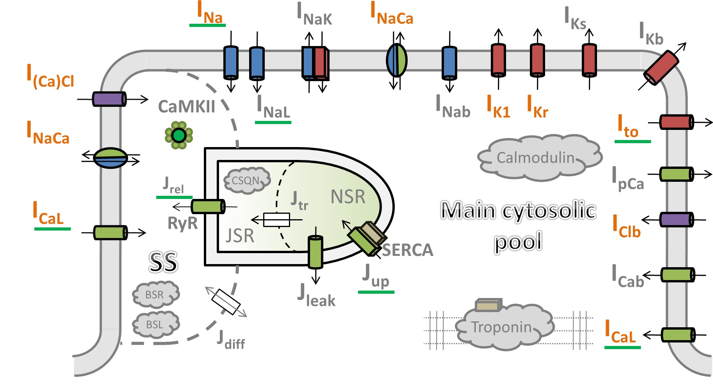

This model has been curated by Anand Rampadarath and is known to run and integrate in the OpenCOR CellML environment. The present computational model reproduces the electrophysiology of human cardiac ventricular cells. Model design, calibration, optimization, and validation is presented (open access) in: Tomek, Jakub, et al. "Development, calibration, and validation of a novel human ventricular myocyte model in health, disease, and drug block." Elife 8 (2019). DOI: 10.7554/eLife.48890
|  |
| A schematic of the novel human ventricular myocyte model for electrophysiology and calcium handling. Orange indicates components, substituted, or added, compared to the original ORd model. ‘SS’ indicates junctional subspace compartment, where calcium influx via L-type calcium current occurs and where calcium is released from the sarcoplasmic reticulum. ‘JSR’ and ‘NSR’ are junctional and network sarcoplasmic reticulum compartments, respectively. ‘Main cytosolic pool’ is the remaining intracellular space. Transmembrane currents are indicated with an ‘I’ in their name, with fluxes indicated as ‘J’. Components with a green underscore are modulated by CaMKII signalling |